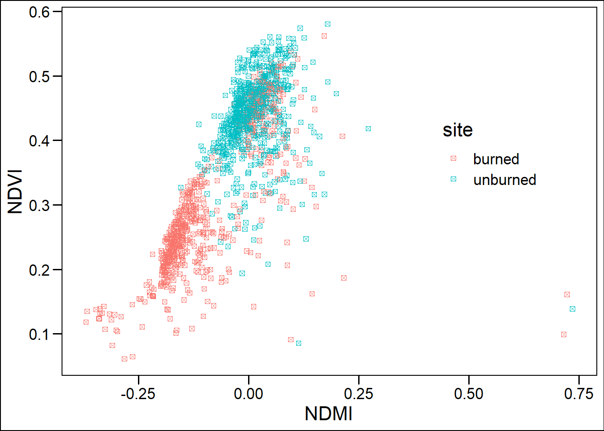
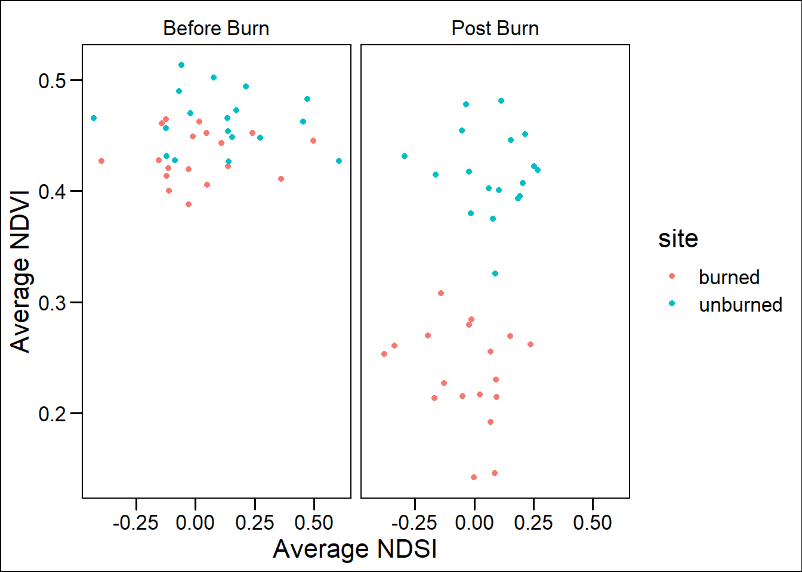
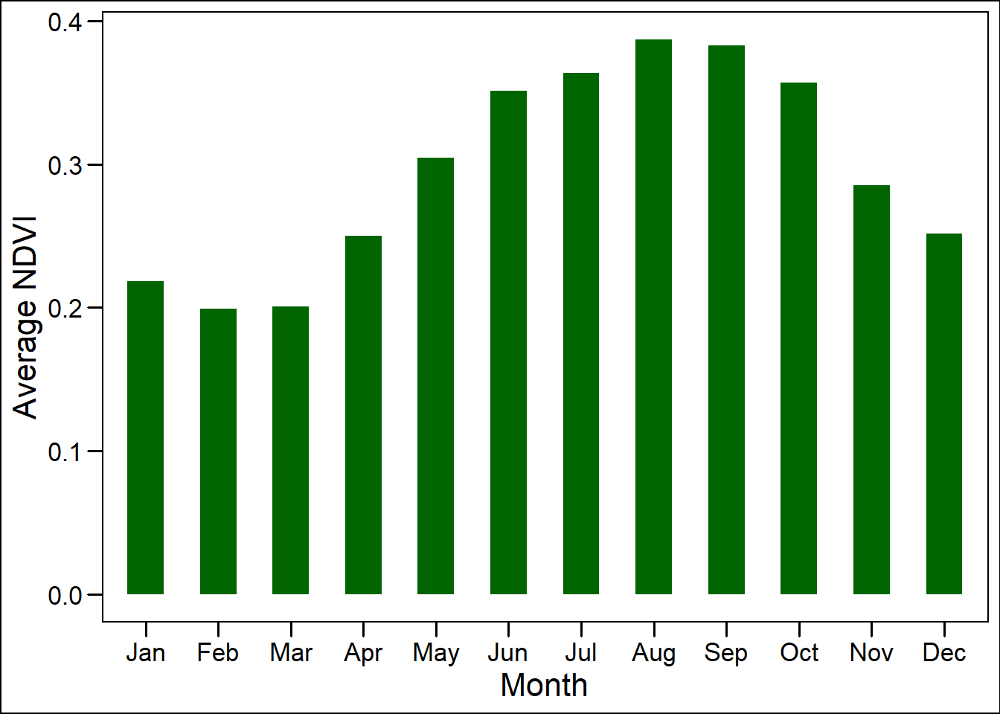

Chapter 3 Hayman Fire Recovery
library(tidyverse)
library(tidyr)
library(ggthemes)
library(lubridate)
# Now that we have learned how to munge (manipulate) data
# and plot it, we will work on using these skills in new ways
knitr::opts_knit$set(root.dir='..')####---- Reading in Data and Stacking it -----####
#Reading in files
#I couldn't knit this with the pathway used, so I used the entire file pathway
files <- list.files('C:/Users/13074/Documents/ESS580/2_fire_data_wrangle/data',full.names=T)
#Read in individual data files
ndmi <- read_csv(files[1]) %>%
rename(burned=2,unburned=3) %>%
mutate(data='ndmi')
ndsi <- read_csv(files[2]) %>%
rename(burned=2,unburned=3) %>%
mutate(data='ndsi')
ndvi <- read_csv(files[3])%>%
rename(burned=2,unburned=3) %>%
mutate(data='ndvi')
# Stack as a tidy dataset
full_long <- rbind(ndvi,ndmi,ndsi) %>%
gather(key='site',value='value',-DateTime,-data) %>%
filter(!is.na(value))3.1 Question 1:
What is the correlation between NDVI and NDMI? - here I want you to convert the full_long dataset in to a wide dataset using the function “spread” and then make a plot that shows the correlation s a function of if the site was burned or not (x axis should be ndmi) You should exclude winter months and focus on summer months
When the NDMI value increases, the NDVI increases as well. While the NDMI was at or below zero for most of the burned site, the NDVI largely does not extend past 0.35. In contrast, NDMI values begin below 0 for the unburned site and extends to about 0.2, with NDVI values ranging between 0.35 and 0.55. The figure suggests that unburned site with its higher vegetation index is able to retain moisture better than the burned site.
#Converts the long format to wide, removes the resulting NAs from the df.
full_wide <- spread(full_long, data, value) %>%
filter_if(is.numeric, all_vars(!is.na(.)))
#Filter for summer months only
summer_fw <- full_wide %>%
mutate(month = month(DateTime), year = year(DateTime)) %>%
filter(!month %in% c(10, 11, 12, 1, 2, 3, 4, 5))
ggplot(summer_fw, aes(x= ndmi, y= ndvi, color = site)) +
geom_point(shape=7) +
theme_base() +
theme(legend.position = c(0.8,0.6)) +
labs(x='NDMI', y="NDVI")
3.2 Question 2:
- What is the correlation between average NDSI (normalized snow index) for January - April and average NDVI for June-August? In other words, does the previous year’s snow cover influence vegetation growth for the following summer?
Both sites demonstrate relatively flat trends between average winter NDSI and average summer NDVI. The difference between the two sites suggests that the amount of winter snow is not as important as a site having enough vegetation to sustain a higher summer NDVI.
#For this, I want average NDSI for Jan-Apr, and average NDVI for Jun-Aug
#Winter
winter_ndsi <- select(full_wide, "DateTime", "site", "ndsi") %>%
mutate(month = month(DateTime), year = year(DateTime)) %>%
filter(month %in% c(1, 2, 3, 4)) %>%
group_by(site, year) %>%
summarise(ave_ndsi = mean(ndsi))## `summarise()` has grouped output by 'site'. You can override using the `.groups` argument.#summer
summer_ndvi <- select(full_wide, "DateTime", "site", "ndvi") %>%
mutate(month = month(DateTime), year = year(DateTime)) %>%
filter(month %in% c(6, 7, 8)) %>%
group_by(site, year) %>%
summarise(ave_ndvi = mean(ndvi))## `summarise()` has grouped output by 'site'. You can override using the `.groups` argument.#Joining them together
winter_summer <- left_join(winter_ndsi, summer_ndvi)## Joining, by = c("site", "year")ggplot(winter_summer, aes(x= ave_ndsi, y= ave_ndvi, color = site)) +
geom_point() +
theme_base() +
geom_smooth(method = "lm") +
theme(legend.position = c(0.85,0.3)) +
labs(x='Average NDSI', y="Average NDVI")## `geom_smooth()` using formula 'y ~ x'3.3 Question 3:
How is the snow effect from question 2 different between pre- and post-burn and burned and unburned?
At both sites, the average winter NDSI had little effect upon NDVI. After the fire, the burned site no longer had any vegetation to sustain, regardless of NDSI, so the NDVI is lower than the unburned site.
#Want a facet wrap of the previous data splitting the difference between pre/post fire
pre_post_winter_summer <- winter_summer %>%
mutate(pre_post = ifelse(year <2002, "Before Burn", "Post Burn"))
ggplot(pre_post_winter_summer, aes(x= ave_ndsi, y= ave_ndvi, color = site)) +
geom_point() +
theme_base() +
facet_wrap(~pre_post) +
labs(x='Average NDSI', y="Average NDVI")
3.4 Question 4:
What month is the greenest month on average?
For the period of record for both sites, August is the greenest month with September not lagging far behind.
# Mutate by month, then find the average NDVI. Bar chart.
green_fw <- full_wide %>%
mutate(month = month(DateTime, label = TRUE)) %>%
group_by(month) %>%
summarise(green= mean(ndvi))
ggplot(green_fw, aes(x= month, y= green)) +
geom_bar(stat="identity", width=0.5, fill="dark green") +
theme_base() +
labs(x='Month', y="Average NDVI")
3.5 Question 5:
What month is the snowiest on average?
January on average is the snowiest month for the period of record.
#Mutate by month, then find the average NDSI. Bar chart.
snow_fw <- full_wide %>%
mutate(month = month(DateTime, label = TRUE)) %>%
group_by(month) %>%
summarise(snow= mean(ndsi > 0))
ggplot(snow_fw, aes(x= month, y= snow)) +
geom_bar(stat="identity", width=0.5, fill="blue") +
theme_base() +
labs(x='Month', y="Average NDSI")3.6 Bonus Question:
Redo all problems with spread and gather using modern tidyverse syntax.
Gather was initially used when reading in and stacking data, while spread was used in Question 1. The pertinent lines of code are replaced below: